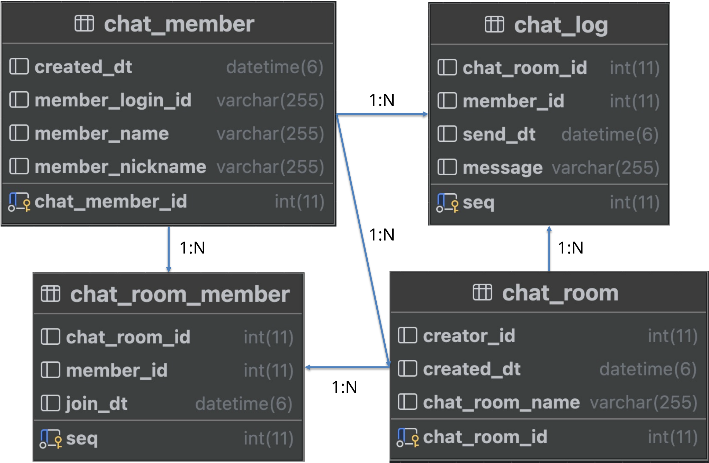
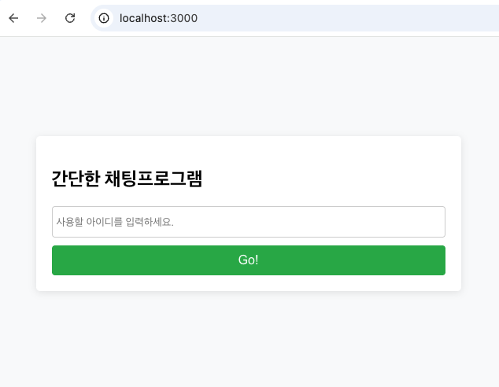
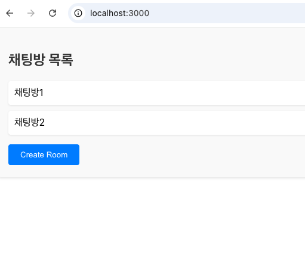
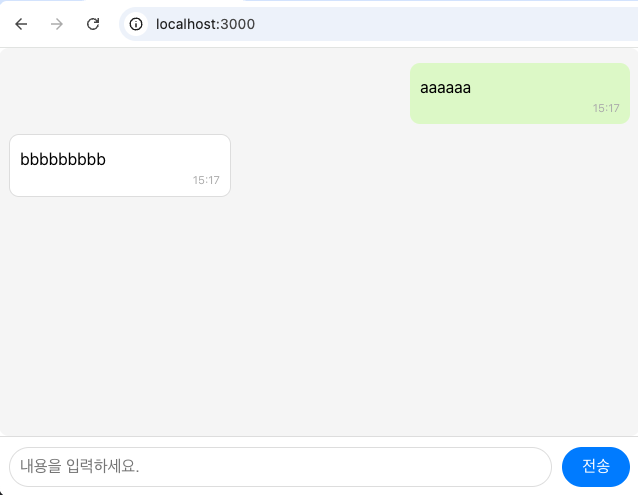
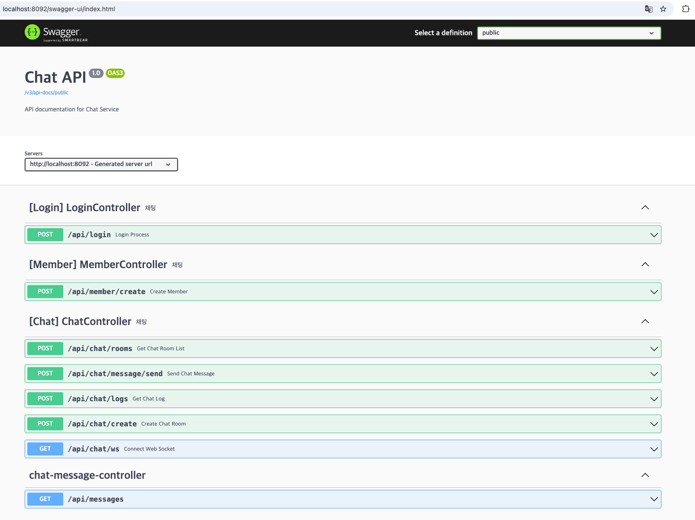

2026년 04월 08일(수)
서브원
기술면접 발표
React, Spring(Kotlin), Kafka, WebSocket 등 평소 덜 쓰던 스택을 빠르게 얹어 보며 도입 가능성과 연동 포인트를 검증한 기술 스파이크 프로젝트에 대한 발표 입니다.
React, Spring(Kotlin), Kafka, WebSocket 등 평소 덜 쓰던 스택을 빠르게 얹어 보며 도입 가능성과 연동 포인트를 검증한 기술 스파이크 프로젝트에 대한 발표 입니다.
평소 업무에서 자주 쓰지 않던 기술을 작은 범위로 프로젝트 생성부터 구현까지 직접 적용해 보며, 기술적·운영적 실현 가능성을 가볍게 점검한 기술 스파이크 프로젝트입니다.
task-chat-api · task-chat-front에 적용한 기술과 버전을 구분별로 정리했습니다.
백엔드 · task-chat-api
Kotlin 1.9.25 · Java 17 · Spring Boot 3.3.3
springdoc-openapi 2.0.2 (Swagger UI), swagger-annotations 2.1.10
Kafka, WebSocket
프론트엔드 · task-chat-front
React 18.3.1, react-dom, Create React App (react-scripts 5.0.1)
Axios ^1.7.6
인프라 · 로컬 실행
MySQL(MariaDB) DB, Zookeeper, Kafka (Confluent), Kafka Manager
로그인, 채팅방 목록조회, 채팅방 진입, 실시간 상태·메시지를 동기화하는 등 전체 과정이 담긴 시퀀스 다이어그램입니다.

이미지 로딩에 실패했습니다. 인터넷 연결을 확인해주세요.
데이터 모델은 회원(User), 채팅방(Room), 방-멤버 매핑(RoomMember), 채팅 로그(ChatLog)로 구성해 참여자와 대화 이력을 분리해 관리하도록 설계했습니다. 채팅 메시지 본문은 암호화한 뒤 DB에 저장해, 민감 정보 보호를 고려했습니다.

task-chat-api는 패키지 기준 레이어드 구조, task-chat-front는 React(CRA) 기반 SPA로 프로젝트를 구성하고, 각 레이어의 역할을 분리해 설계했습니다.
백엔드 · task-chat-api
Controller · WebSocket 엔드포인트 · DTO
ChatService · LoginService · Kafka Producer / Consumer
Entity · Repository
Config · Swagger · CORS · 암호화 · WS 핸들러
프론트엔드 · task-chat-front
View 컴포넌트 · 로그인 / 채팅방 목록 / 채팅방 화면
Axios REST 클라이언트 · WebSocket 메시지 송수신
index · App · CRA 빌드 · 환경 설정
로그인·채팅방 목록·채팅 화면과 Swagger UI 화면을 실제 사용 흐름에 따라 나열했습니다.




해당 프로젝트는 완벽함보다는 기존에 사용하지 않았던 기술을 적용해 보며, 현재 레거시 시스템에 자연스럽게 녹여낼 수 있는지 확인하는 데 목적을 둔 실험이었습니다.
← → 슬라이드 이동